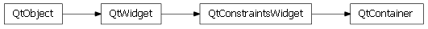

Bases: enaml.widgets.constraints_widget.ConstraintsWidget
A ConstraintsWidget subclass that provides functionality for laying out constrainable children according to their system of constraints.
The Container is the canonical component used to arrange child widgets using constraints-based layout. Given a heierarchy of components, the top-most Container will be charged with the actual layout of the decendents. This allows constraints to cross the boundaries of Containers, enabling powerful and flexible layouts.
There are widgets whose boundaries constraints may not cross. Some examples of these would be a ScrollArea or a TabGroup. See the documentation of a given container component as to whether or not constraints may cross its boundaries.
A boolean which indicates whether or not to allow the layout ownership of this container to be transferred to an ancestor. This is False by default, which means that every container get its own layout solver. This improves speed and reduces memory use (by keeping a solver’s internal tableaux small) but at the cost of not being able to share constraints across Container boundaries. This flag must be explicitly marked as True to enable sharing.
A read-only symbolic object that represents the internal left boundary of the content area of the container.
A read-only symbolic object that represents the internal right boundary of the content area of the container.
A read-only symbolic object that represents the internal top boundary of the content area of the container.
A read-only symbolic object that represents the internal bottom boundary of the content area of the container.
A read-only symbolic object that represents the internal width of the content area of the container.
A read-only symbolic object that represents the internal height of the content area of the container.
A read-only symbolic object that represents the internal center along the vertical direction the content area of the container.
A read-only symbolic object that represents the internal center along the horizontal direction of the content area of the container.
A box object which holds the padding for this component. The padding is the amount of space between the outer boundary box and the content box. The default padding is (10, 10, 10, 10). Certain subclasses, such as GroupBox, may provide additional margin than what is specified by the padding.
A read only property which returns this container’s widgets.
Containers freely exapnd in width and height. The size hint constraints for a Container are used when the container is not sharing its layout. In these cases, expansion of the container is typically desired.
Handle a ChildrenEvent on a container.
This event handler will send a relayout event if the Container is active and the user has not defined their own constraints.
alias of __NoInterface__

Bases: enaml.qt.qt_constraints_widget.QtConstraintsWidget
A Qt implementation of an Enaml Container.
Rebuilds the constraints layout for this widget if it owns the responsibility for laying out its descendents.
Makes a layout pass over the descendents if this widget owns the responsibility for their layout.
Refresh the min/max/best sizes for the underlying widget.
This method is normally called automatically at the proper times. It should not normally need to be called by user code.
Replace constraints in the given layout.
This method can be used to selectively add/remove/replace constraints in the layout system, when it is more efficient than performing a full relayout.
| Parameters: |
|---|
Clear the given constraints from the current layout.
| Parameters: | cns (list) – The list of casuarius constraints to remove from the current layout system. |
|---|
The callback invoked by the layout manager when there are new layout values available.
This iterates over the layout table and calls the geometry updater functions.
Get the contents margins for the container.
The contents margins are added to the user provided padding to determine the final offset from a layout box boundary to the corresponding content line. The default content margins are zero. This method can be reimplemented by subclasses to supply different margins.
| Returns: | result (tuple) – A tuple of ‘top’, ‘right’, ‘bottom’, ‘left’ contents margins to use for computing the contents constraints. |
|---|
Notify the layout system that the contents margins of this widget have been updated.
Create the contents constraints for the container.
The contents contraints are generated by combining the user padding with the margins returned by ‘contents_margins’ method.
| Returns: | result (list) – The list of casuarius constraints for the content. |
|---|
A method which can be called by other components in the hierarchy to gain ownership responsibility for the layout of the children of this container. By default, the transfer is allowed and is the mechanism which allows constraints to cross widget boundaries. Subclasses should reimplement this method if different behavior is desired.
| Parameters: | owner (Declarative) – The component which has taken ownership responsibility for laying out the children of this component. All relayout and refresh requests will be forwarded to this component. |
|---|---|
| Returns: | results (bool) – True if the transfer was allowed, False otherwise. |
Whether or not the container expects to transfer its layout ownership to its parent.
This method is predictive in nature and exists so that layout managers are not senslessly created during the bottom-up layout initialization pass. It is declared public so that subclasses can override the behavior if necessary.
Calculates the minimum size of the container which would allow all constraints to be satisfied.
If the container’s resist properties have a strength less than ‘medium’, the returned size will be zero. If the container does not own its layout, the returned size will be invalid.
| Returns: | result (QSize) – A (potentially invalid) QSize which is the minimum size required to satisfy all constraints. |
|---|
Calculates the best size of the container.
The best size of the container is obtained by computing the min size of the layout using a strength which is much weaker than a normal resize. This takes into account the size of any widgets which have their resist clip property set to ‘weak’ while still allowing the window to be resized smaller by the user. If the container does not own its layout, the returned size will be invalid.
| Returns: | result (QSize) – A (potentially invalid) QSize which is the best size that will satisfy all constraints. |
|---|
Calculates the maximum size of the container which would allow all constraints to be satisfied.
If the container’s hug properties have a strength less than ‘medium’, or if the container does not own its layout, the returned size will be the Qt maximum.
| Returns: | result (QSize) – A (potentially invalid) QSize which is the maximum size allowable while still satisfying all constraints. |
|---|

Bases: enaml.wx.wx_constraints_widget.WxConstraintsWidget
A Wx implementation of an Enaml Container.
The event handler for the EVT_SIZE event.
This handler triggers a layout pass when the container widget is resized.
The event handler for the EVT_SHOW event.
This handler toggles the value of the _is_shown flag.
Rebuilds the constraints layout for this widget if it owns the responsibility for laying out its descendents.
Makes a layout pass over the descendents if this widget owns the responsibility for their layout.
If the widget is not visible on the screen, the refresh will be skipped.
Refresh the min/max/best sizes for the underlying widget.
This method is normally called automatically at the proper times. It should not normally need to be called by user code.
Replace constraints in the given layout.
This method can be used to selectively add/remove/replace constraints in the layout system, when it is more efficient than performing a full relayout.
| Parameters: |
|---|
Clear the given constraints from the current layout.
| Parameters: | cns (list) – The list of casuarius constraints to remove from the current layout system. |
|---|
The callback invoked by the layout manager when there are new layout values available.
This iterates over the layout table and calls the geometry updater functions.
Get the contents margins for the container.
The contents margins are added to the user provided padding to determine the final offset from a layout box boundary to the corresponding content line. The default content margins are zero. This method can be reimplemented by subclasses to supply different margins.
| Returns: | result (tuple) – A tuple of ‘top’, ‘right’, ‘bottom’, ‘left’ contents margins to use for computing the contents constraints. |
|---|
Notify the layout system that the contents margins of this widget have been updated.
Create the contents constraints for the container.
The contents contraints are generated by combining the user padding with the margins returned by ‘contents_margins’ method.
| Returns: | result (list) – The list of casuarius constraints for the content. |
|---|
A method which can be called by other components in the hierarchy to gain ownership responsibility for the layout of the children of this container. By default, the transfer is allowed and is the mechanism which allows constraints to cross widget boundaries. Subclasses should reimplement this method if different behavior is desired.
| Parameters: | owner (Declarative) – The component which has taken ownership responsibility for laying out the children of this component. All relayout and refresh requests will be forwarded to this component. |
|---|---|
| Returns: | results (bool) – True if the transfer was allowed, False otherwise. |
Whether or not the container expects to transfer its layout ownership to its parent.
This method is predictive in nature and exists so that layout managers are not senslessly created during the bottom-up layout initialization pass. It is declared public so that subclasses can override the behavior if necessary.
Calculates the minimum size of the container which would allow all constraints to be satisfied.
If this container does not own its layout then it will return an invalid wxSize.
| Returns: | result (wxSize) – A (potentially) invalid wxSize which is the minimum size required to satisfy all constraints. |
|---|
Calculates the best size of the container.
The best size of the container is obtained by computing the min size of the layout using a strength which is much weaker than a normal resize. This takes into account the size of any widgets which have their resist clip property set to ‘weak’ while still allowing the window to be resized smaller by the user. If this container does not own its layout then it will return an invalid QSize.
| Returns: | result (wxSize) – A (potentially) invalid wxSize which is the minimum size required to satisfy all constraints. |
|---|
Calculates the maximum size of the container which would allow all constraints to be satisfied.
If this container does not own its layout then it will return an invalid wxSize.
| Returns: | result (wxSize) – A (potentially) invalid wxSize which is the maximum size allowable while still satisfying all constraints. |
|---|